第一篇¶
| Date: | 2003-02-23 |
|---|---|
| Time: | 12:18 |
关于 HR 效用，Schmidt 等所认为的 utility 实际上是 HR 边际效用，因此从来不考虑 HR 成本；而 Boudrea 等所说的 utility 实际上是指 HR 边际利润，因此要减去成本，但这个成本的减法有待考虑，最起码也应该是边际成本，Boudrea 在成本这块打混帐，而且这个成本和 Cascio 所认为的 HR 成本是两码事，Cascio 的 costing HR，总体而言分成三块：时间成本，如工资、专家费等；实物成本，如材料开支等；机会成本，如老板做员工教育的成本。
HR 效用研究文献¶
在所看到的文献中，HRM 决策都被描述为“intervention”，这个词用的很有意思，它的意思是“干扰”，这就意味着组织的 HRM 是一个连续运转的过程，而HR管理者所做的HR决策都是在对这个过程造成干扰，使组织的HR过程产生混乱，从而组织必然要承担一定的损耗和由此而来的成本。那么接下来，这种人为造成的损耗和成本是否值得就成为一个理所当然要研究解决的问题，HR Utility研究的主要目的正在于此。
基本 BCG 模型¶
HR 效用主要是用效用分析（utility analysis, UA）来帮助引导 HR 决策的制定，并估计 HRM 干扰的价值（value）。目前大部分UA都采用Brogden-Cronbach-Gleser (B-C-G)模型来估计特定 HRM 干扰对组织的有用程度。基本 BCG 模型如下：
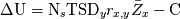
其中：
- 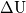 = 应用选拔工具带来的效度增量
 = 录取人数
= 录取人数- = 录取求职者的平均任期
- 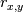 = 预测指标—校标相关系数
- 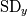 = 单位绩效标准差的货币价值
- = 选拔程序成本
BCG 模型原型¶
假定一个员工的货币价值（y）和预测指标（predictor）（x）之间的回归呈线性，Brogden（1949）指出一个有效的、基于自变量的选择过程高于随机选择过程的效用均值表示为：
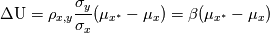
其中：
- 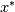 指选定或受限总体的预测指标值；
- 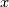 指非受限申请者总体的预测指标值；
- 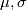 是相应预测指标的均值和标准差；
- 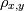 通常指 x 和工作绩效的已知测量值之间的相关系数；
一般 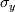 和 被写作 和 。
Brogden 在不失一般性的前提下，假定 x 的分布的均值为 0，标准差为 1。因此公式简化为：
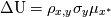
这样就得出了基本 BCG 模型的原型。